Introduction to MATLAB
- The name MATLAB stands for MATrix LABoratory.
- MATLAB integrates computation, visualization and programming environment.
- MATLAB is a modern programming language environment: it has sophisticated data structures, contains built-in editing and debugging tools, and supports object-oriented programming.
- MATLAB has poweful built-in routines that enable a wide variety of computations.
- Toolboxes are packages that collect specific applications (Use help to explore different toolboxes).
Contents
- MATLAB Basics
- MATLAB as a calculator
- Give-it-a-try (1)
- Basics of Plotting
- Give-it-a-try (2)
- Other 2D and 3D Plots :
- Give-it-a-try (3)
- Matrices and Arrays
- Give-it-a-try (4)
- Array Operations
- Give-it-a-try (5)
- Multidimensional Arrays
- Cell Arrays
- Structure Array
- Symmbolic Toolbox
- Give-it-a-try (6)
- Other Useful Symbolic functions
- Give-it-a-try (7)
- Introduction to Programming in MATLAB
- Give-it-a-try (8)
- Other Control flow commands
- Give-it-a-try (9)
- User-Defined Functions
- (1) Anonymous Functions
- (2) Function Files
- References
MATLAB Basics
MATLAB development IDE can be launched from the icon created on the desktop. The main working window in MATLAB is called the desktop. When MATLAB is started, the desktop appears in its default layout
- Current Folder — Access your files.
- Command Window — Enter commands at the command line, indicated by the prompt (>>).
- M-file editor/debugger window — create and edit scripts of commands called M-files
- Workspace — Explore data that you create or import from files.
- Getting Help — Online help, help bar,
help command (e.g. plot)
lookfor command
doc command
- Interrupting and Terminating MATLAB — Ctrl-C, quit, exit
- Simulink : It provides an environment for multidomain simulation and model-based design for dynamic and embedded systems. It provides an interactive graphical environment and a customizable set of block libraries.With an easy-to-use graphical design environment, Simulink allows us to design, simulate, implement, and test a variety of timevarying systems, including communications, control, signal processing, and video processing.
MATLAB as a calculator

- Hierarchy of arithmetic operations
- The contents of all parentheses, starting from the innermost parentheses and working outward.
- All exponentials, from left to right.
- All multiplications and divisions, from left to right
- All additions and subtractions, from left to right.
- Elementry Functions

- Predefined Constants

- Variables and Assignments :
- Must start with a letter
- May consist letters, digits, and the underscore character
- May be as long as you would like, but MATLAB only recognize the first 31 chararcters
- Is case sensitive
- If a variable name is not specified, MATLAB will assign the default variable, ans
- Entering multiple statements per line: Use commas (,) or semicolons (;)
- Percent sign (%) begins a comment.
- Three periods (...) at the end of a command indicates that the command continues on the next line
- Esc key erases the current command.
- Press the up/down arrow cursor to scroll through previous commands.
- Displaying Values and Text :
- By entering the variable name at the MATLAB prompt, without a semicolon.
- By using the command disp: disp(variable), disp(string)
- By using the command fprintf
Give-it-a-try (1)
Calculate the result of the following expressions:
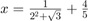
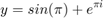
Basics of Plotting
MATLAB’s extensive, device-independent plotting capabilities are among its most powerful features. They make it very easy to plot any data at any time.
- Plot in 2D : two vectors of x-coordinates and y-coordinates with the same size are needed to locate the poits (x,y); x and y must have an identical array form
- plot(X,Y)
- Adding titles, axis labels and annotaions: title(string), xlabel(string), ylabel(string), legend(), axis(),
- Multiple data sets in one plot
- plot(X1,Y1,LineSpec1,...,Xn,Yn,LineSpecn)
- Specifying line styles and colors :
- plot(X,Y, 'Style_color_marker')

Give-it-a-try (2)
Plot the following functions in the interval 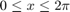,
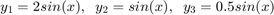
Other 2D and 3D Plots :
- Other 2D plots
- Polar plot: plots a function in polar coordination.
- Bar plot
- Stairs plot
- Histogram plot
- Stem plot
- Compass plot
- Pie plot
- semilogx, semilogy, loglog
- Plot from Workspace: right click on the variable in workspace and plot the variable
- Graph Management Functions:
- subplot is used to visualize separate plots in a same figure, subplot(m,n,p) : divides the figure in 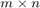 subplots, and p activates each subplot
- figure (n)
- hold on : to draw more than one curve, surface, or line (or combination of these) on a given graph
- Save graphics : MATLAB provides the means to convert a figure to a format compatible with many common print devices.
print('-deps2', 'c:/path/FileName.eps')
- Save workspace variables: save, save data , save data x y
- 3D Plots
- plot3
- mesh
- surf
- bar3
- contour/contour3
- pie3
- scatter3
Give-it-a-try (3)
Use a 3D plot (mesh, surf, or plot3), to plot the following function over a surface on
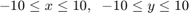
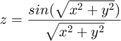
Matrices and Arrays
Arrays are the basic elements of the MATLAB environment.
- Scalars : variables that represent single numbers.
- Arrays : Variables that represent more than one number. Each number is called an element of the array.
- Row and Column Arrays (Vector) : A row of numbers or a column of numbers
- Two-Dimensionall Arrays (Matrix) : A two-dimensional table of numbers.
- Defining a row vector, a column vector, a matrix
v = [1 4 6 7 8]; w = [1 ; 4 ; 6 ; 7 ; 8]; A = [1 2 3; 4 5 6; 7,8,9];
- Array Indexing/Addressing: indicates the location of an element in the array
- Vector addressing : A vector is addressed with an integer index (indexing starts from 1 in MATLAB).
- Matrix addressing : A matrix is addressed with two integer indices, first one represents the row index, and the second one represents the column index.
- Colon Notation : Addresses a block of elements (subarrays): (start:increment:end)
- Vector creation Alternatives

v(1:3); %sub-vector v(3:end); w = v.'; % transpose A(2,1); % matrix element addressing A(:); %vectorizing A(2,:); % 2nd row of the matrix B = A([2 3],[1 2]); % sub-matrix C = A(1:2,2:3); % sub-matrix A(:,2)=[]; % deleting the 2nd column x1 = 0:0.1:1; x2 = linspace(0,1,11);
- Special functions to generate arrays
- zeros(m,n,..)
- ones(m,n,..)
- randn, rand
- eye(m,n)
- magic(n) (square matrix)
Give-it-a-try (4)
Generate a 4 by 4 matrix called A whose elements are non-zero. Use array indexing to assign zero to the (1,3)th and (4,3)-th element of A.
Array Operations
- Matrix arithmetic

- Array arithmetic operations are done element-by-element


- Important matrix functions

Give-it-a-try (5)
Find the solution to the following system of linear equations. Hint: Convert the system to a matrix notation
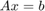

Multidimensional Arrays
MATLAB allows us to create arrays with as many dimensions as necessary for any given problem.

A = rand(2,3,4); A(:,:,2);
Cell Arrays
- A cell array is a special MATLAB array whose elements are cells, containers that can hold other MATLAB arrays.
- In programming terms, each element of a cell array is a pointer to another data structure, and those data structures can be of different types.
- Cell arrays provide a great way to collect information about a problem, because all of the information can be kept together and accessed by a single name.
- Cell arrays use braces “{}” instead of parentheses “()” for selecting and displaying the contents of cells.

my_cell{1,1}=magic(4);
my_cell{1,2}='Hello';
my_cell;
celldisp(my_cell);
my_cell{1} =
16 2 3 13
5 11 10 8
9 7 6 12
4 14 15 1
my_cell{2} =
Hello
my_cell{1,1}(2,3) ; % Indexing Cells
my_cell{1}=[] ; % Deleting Cells in Arrays
Structure Array
An array is a data type in which there is a name for the whole data structure, but individual elements within the array are known only by number. A cell array is a data type in which there is a name for the whole data structure, but individual elements within the array are known only by number. However, the individual elements in the cell array may be of different types. In contrast, a structure is a data type in which each individual element has a name. The individual elements of a structure are known as fields, and each field in a structure may have a different type. The individual fields are addressed by combining the name of the structure with the name of the field, separated by a period.
- Creating Structure Array
- A field at a time, using assignment statements
- All at once, using the struct function
clear all student.name = 'John'; student.add = '12 Main street'; student.height = 180; student.GPA = 'A';
Symmbolic Toolbox
Symbolic Math Toolbox™ provides functions for solving, plotting, and manipulating symbolic math equations. These symbols can be intermixed with nonsymbolic variable names, numbers, and MATLAB functions, with the result being a symbolic expression.
- use syms to declare the variables you plan to use to be symbolic variables.
- The command expand multiplies out the expression;
- The command factor restores the expression to factored form.
- The command simplify is used to express a formula as simply as possible
Example :
clear all syms x y %for real variables, syms x y real expanded = expand((x-y)^3); factored = factor(expanded); simplified = simplify(sin(x)*cos(y)+cos(x)*sin(y));
- Variable Precision Arithmetic : vpa ('expression',n), results the precision with n desired numbers
Give-it-a-try (6)
Evaluate the following expression with 5, and 50 digitis of precision
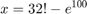
Other Useful Symbolic functions
- Symbolic Differentiation and Integration
- diff(f,x,n) : differentiates f with respect to x, n times.(e.g. n=2 the second derivative)
- int(f,x,c,d) : integrates f with respect to x, c/d are lower/upper limits.
- When c and d are omitted, the application of int results in the indefinite integral of f
clear all syms b t; dt = diff(b*cos(b*t),t,1); db2 = diff(b*cos(b*t),b,2); it = int(dt,t);
- limit(f,x,z): takes the limit a symbolic expression f as x approaches the limiting value z
- taylor(f,n,a,x) : returns an n-term taylor series expansion of the function f about the point a
- ilaplace(F,s,t) : returns the inverse Laplace transform of F
Inverse Laplace transform of the following expression using symbolic math Toolbox can be found as
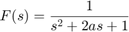
syms s t a F=1/(s^2+2*a*s+1); f = ilaplace(F,s,t); pretty(simplify(f));
2
exp(-a t) sinh(t sqrt(a - 1))
------------------------------
2
sqrt(a - 1)
- Symbolic Plot Functions (Easy Plot) In all previous plots, we have created arrays of data to plot and passed those arrays to the plotting function. MATLAB also includes functions that will plot a function directly, without the necessity of creating intermediate data arrays.
- ezplot (fun,[xmin xmax]): The argument fun is either a function handle, the name of an M-file function, or a character string containing the functional expression to be evaluated.
- fplot (fun,[xmin xmax]):Function fplot is similar to but more sophisticated than ezplot.
- ezplot3
- fplot3
- fsurf
- fmesh
- fcontour
Give-it-a-try (7)
Use ezplot or fplot to plot the following function over 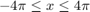
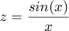
Introduction to Programming in MATLAB
the commands entered in the Command Window cannot be saved and executed again for several times. Therefore, a di®erent way of executing repeatedly commands with MATLAB is:
- create a file
- save the file
- run the file
- Files containing programs using m-language are called m-files. They have an extension .m.
Programming instructions we present the basic programming instructions that we may require in a MATLAB m-file.
- If Statement

- If-else Statement

- elseif Statement


Give-it-a-try (8)
Write an M-file which reads the input data for a passing grade and indicates if the student passes or fails a course. A passing grade has to be grater than 50. Hint: use input() function to read the grades.
Other Control flow commands
- Switch-case statement

- For Loop

- while Loop

Give-it-a-try (9)
Write a program which adds all the elements of an arbitrary size random-valued matrix using the following double sum expression
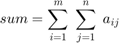
User-Defined Functions
In computer programming, functions are the principal tools for managing complexity. They allow a complicated program to be broken up into many simpler parts, parts that are easier to understand, easier to write, and easier to test.
- Anonymous Functions
- Function Files
(1) Anonymous Functions
- Anonymous functions are a means of creating functions for simple expressions without having to create M-files or subfunctions.
- An anonymous function is a function that is not stored in a program file, but is associated with a variable whose data type is function_handle.
- Anonymous functions can accept inputs and return outputs, just as standard functions do. However, they can contain only a single executable statement.
_functionhandle=@(arguments)(expressions)_
- The @ operator creates the handle, and the parentheses () immediately after the @ operator include the function input arguments.
- Multiple Anonymous Functions : The expression in an anonymous function can include another anonymous function. This is useful for passing different parameters to a function that you are evaluating over a range of values.
Example : Use anonymous function to solve the following equation:
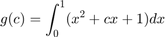
clear all, % First method c1 = 2; g_c1 = integral(@(x) (x.^2+c1*x+1),0,1); % g = integral(fun,xmin,xmax) % Second method g_c = @(c) (integral(@(x) (x.^2 + c*x + 1),0,1)); g_c(2);
- Anonymous functions with Multiple Inputs or Outputs: Anonymous functions require that you explicitly specify the input arguments as you would for a standard function, separating multiple inputs with commas. However, you do not explicitly define output arguments when you create an anonymous function. If the expression in the function returns multiple outputs, then you can request them when you call the function. Enclose multiple output variables in square brackets.
Example:
close all, clear all c = 20; mygrid = @(x,y) ndgrid((-x:x/c:x),(-y:y/c:y)); [x,y] = mygrid(pi,2*pi); z = sin(x) + cos(y); surf(x,y,z);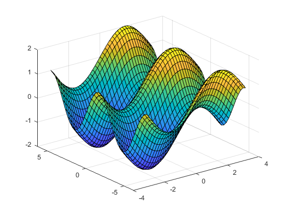
- Arrays of Anonymous Functions: Although most MATLAB fundamental data types support multidimensional arrays, function handles must be scalars (single elements). However, you can store multiple function handles using a cell array or structure array. The most common approach is to use a cell array
Example :
clear all f = {@(x)x.^2; @(y)y+10; @(x,y)x.^2+y+10}; % access x = 1; y = 10; first = f{1}(x); second = f{2}(y); third = f{3}(x,y);
(2) Function Files
- function [y1,...,yN] = myfun(x1,...,xM) :
declares a function named myfun that accepts inputs x1,...,xM and returns outputs y1,...,yN. This declaration statement must be the first executable line of the function. * Save the function code in a text file with a .m extension. The name of the file should match the name of the first function in the file. * Valid function names begin with an alphabetic character, and can contain letters, numbers, or underscores. * Files can include multiple local functions or nested functions.
- Use the end keyword to indicate the end of each function in a file if:
- Any function in the file contains a nested function
- Any local function in the file uses the end keyword. Otherwise, the end keyword is optional.
Example :

References
- [1] Matlab Help
- [2] Matlab programming with application for engineers, Stephen J. Chapman
- [3] An introduction to Matlab Programming and numerical methods for engineers, Timmy Siauw.
- [4] An engineer's guide to Matlab, Edward B. Magrab.
- [5] Learning to program with Matlab building GUI tools, Craig s. Lent.
- [6] A Guide to Matlab for beginners and experienced users, Brian R. Hunt.